Insert Body Material
The Pinball/Insert Hybrid material renders the inside of an insert. Its Plastic, Lamp, and Baked Data sections separate the unlit body, the lamp shining through it, and the maps that describe its geometry. These controls update immediately and do not require another bake.
This page uses the material inspector's labels. Controls are disabled where the shader would ignore them.
The pictures show two clear inserts sharing one material, with the Clear color and the Clear Plastic look, changing one value at a time: the upper insert is off, the lower one is lit, so each setting shows what it does both ways. The middle picture is the value the material gets from its presets. Min Brightness only works on colored plastic, so it shows two red inserts with the Colored Plastic look, the left one off and the right one lit.
Plastic
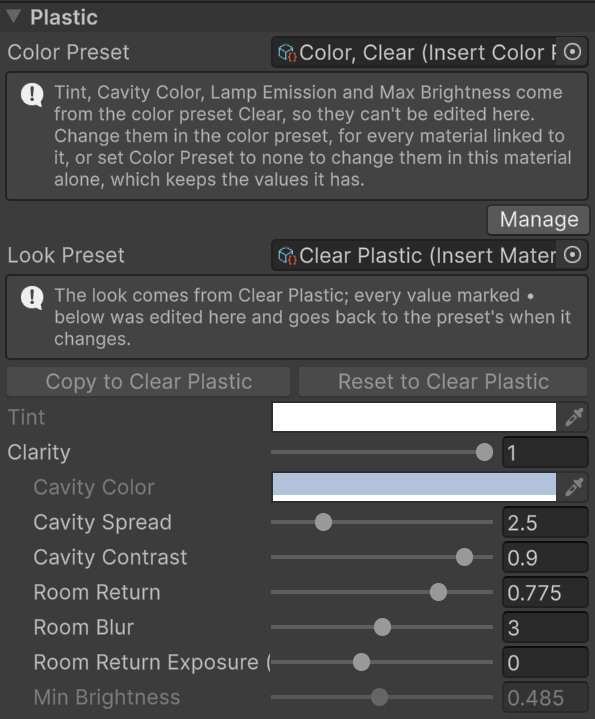
Start with every lamp off. Choose how dark the colored body should be, or how much of a bright cavity should show through clear plastic, before setting the lit brightness.
- Color Preset is the color preset the material follows, which owns Tint, Cavity Color, Lamp Emission, and Max Brightness. While the material is linked, those fields are grayed out: change them in the color preset with Manage, or set Color Preset to none to change them in this material alone.
- Look Preset is the look preset the material follows, which owns everything else on this page. Values edited here are marked with a •. Copy to makes them part of the look; Reset to takes the look's values back. A material of the asset library, or of a locked library, is grayed out and can't be changed: fork the insert wearing it first, which gives it copies of its own. See Forking an insert.
Tint
Tint is the plastic's color when the lamp is off. It multiplies the whole body under room light, tinted or clear, but not the lamp's light: once the lamp is on, the color comes from Lamp Emission and the Insert Light component. Compare the unlit insert at the top of each picture with the lit one below it.
| White (Clear) | Red | Blue |
|---|---|---|
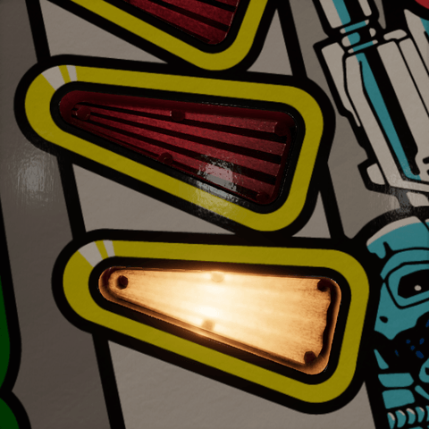 |
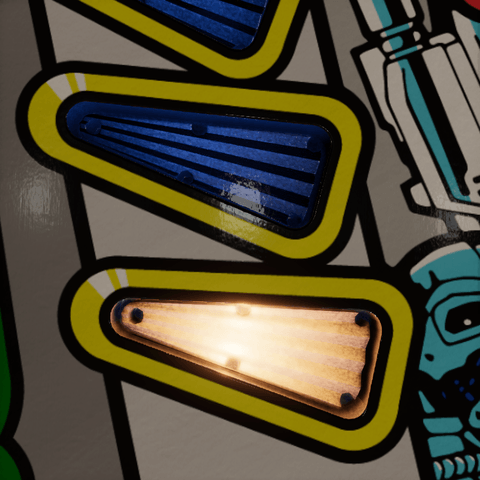 |
Clarity
Clarity blends from tinted plastic at zero, dark until the lamp comes up, to clear plastic at one, which shows the lamp board or reflector under it lit by room light, lamp or no lamp. Shown at Min Brightness 0.1, where the tinted body goes dark with the lamp off: at a middle Min Brightness the two ends look alike.
| 0 | 0.5 | 1 (Clear Plastic) |
|---|---|---|
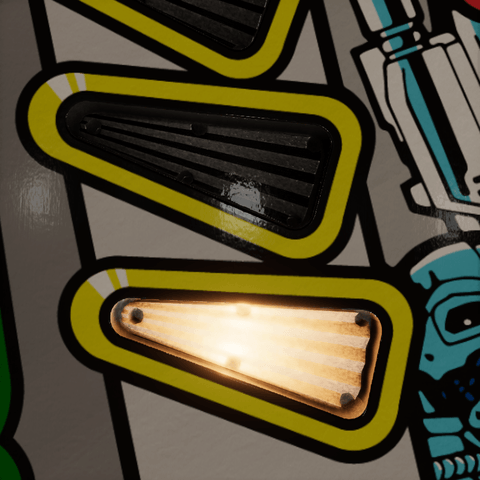 |
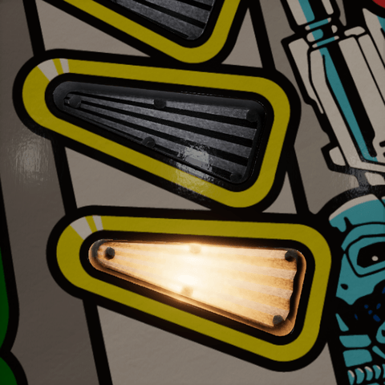 |
Cavity Color
Cavity Color is what lies under a clear insert: the lamp board or reflector, still multiplied by Tint. A light gray suits a white board. Available when Clarity is above zero.
| Dark gray | Cool gray (Clear) | Yellowed |
|---|---|---|
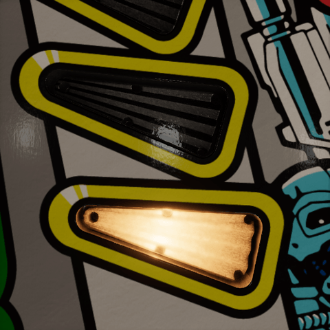 |
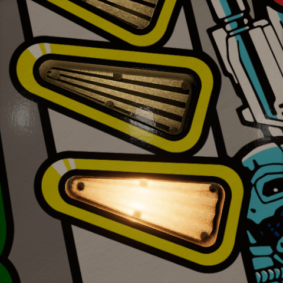 |
Cavity Spread is how far the cavity stays bright around the virtual lamp, in lamp radii, from 1 to 8. Wide keeps a clear starburst's ribs even; narrow darkens the faces that look past the lamp, and the bright patch slides with the view, which is part of what makes the plastic read as clear.
| 1 | 2.5 (Clear Plastic) | 8 |
|---|---|---|
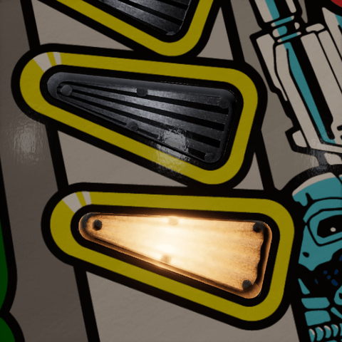 |
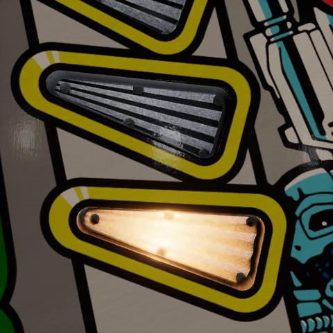 |
Cavity Contrast is how much darker a face gets when its view lands past the cavity, from 0 to 1. Low keeps the ribs soft; high makes them alternate. Both only show on a clear starburst. Clear Plastic uses 0.9. Shown at Cavity Spread 1, where little of the body sees the cavity: at a wider spread most faces see it and the contrast has little to darken.
| 0 | 0.5 | 1 |
|---|---|---|
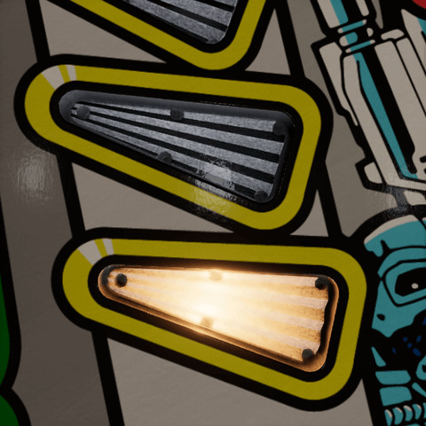 |
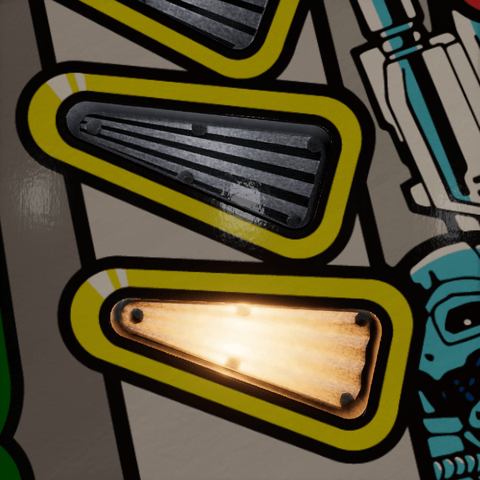 |
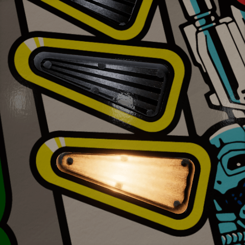 |
Room Return
Room Return is how much of the room a clear body returns through its grooves, from 0 to 1. Light that came in through the top is thrown across a groove, off one facet and its neighbor, and back out through the top, the way a corner reflector returns a beam; in a shallower groove the top throws it back down onto the neighbor first. So the ribs show the room above the table, brighter from a low view, and ribs leaning one way return a different part of it than those leaning the other, exchanging their brightness as the eye moves round the insert. The sky gives the room its shape, brighter one way than another; the light falling on the insert gives it its brightness, whether it comes from the sky, the light probes or a directional light, so the ribs read alike in a dark room and a bright one. The returned light replaces as much of the cavity as it weighs, and the scene's lights glint off the facets that return it. A lit insert still reflects the room, but the reflection takes the color of the bulbs that are on, the more the brighter they are, so a red lamp at full turns it red and one barely on leaves it white. Seen from straight above, most of the light goes through shallow facets into the cavity and little comes back, so the pictures look at the unlit insert at an angle.
| 0 | 0.775 (Clear Plastic) | 1 |
|---|---|---|
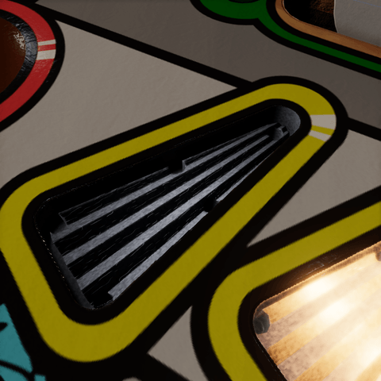 |
Room Blur is how blurred that reflection is, in mips of the sky's reflection, from 0 to 6: a molded groove is never a clean mirror. Enabled when Room Return is above zero.
| 0 | 3 (Clear Plastic) | 6 |
|---|---|---|
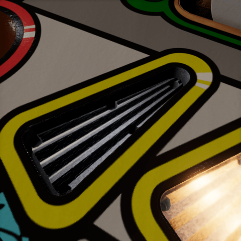 |
Room Return Exposure (EV) lifts or lowers the returned room in stops, from -4 to 6. Zero returns the room as bright as the light on the insert; more makes the ribs read stronger. It scales only the returned light, not the share of the cavity it replaces.
| -2 | 0 (Clear Plastic) | 3 |
|---|---|---|
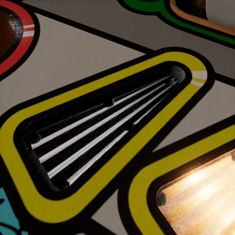 |
Min Brightness
Min Brightness is how much of the tint shows under room light with the lamp off, from 0 to 1. Low keeps a red insert dark until it is lit; it fades to full as the lamp comes up. Only the tinted share of the body uses it, and it does not keep the lamp's emission or spill on.
| 0 | 0.485 (Colored Plastic) | 1 |
|---|---|---|
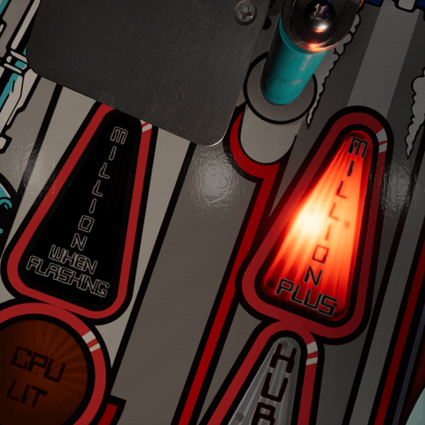 |
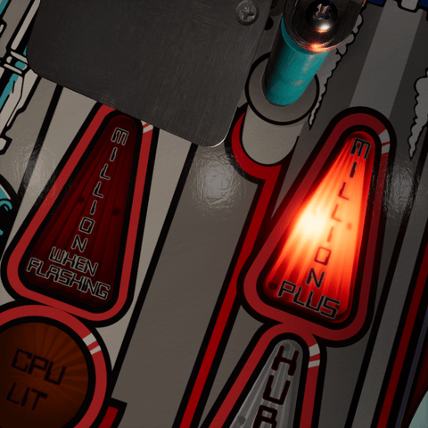 |
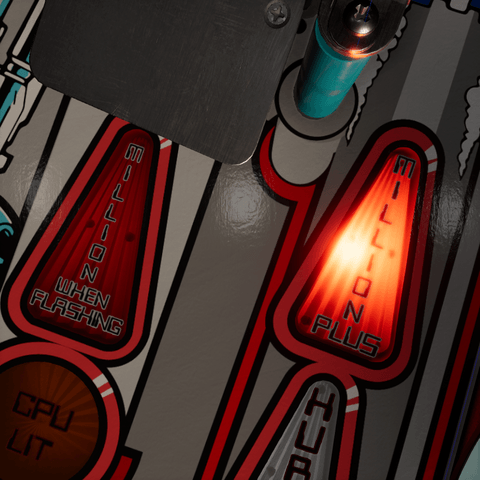 |
Note
Clear is an appearance, not transparency. The hybrid body is opaque. Its clear look approximates the ambient-lit board or reflector viewed through plastic, using the baked response and virtual lamp positions. It does not sample a real object behind the insert or the screen color. The optional cover supplies the transparent top layer.
Surface
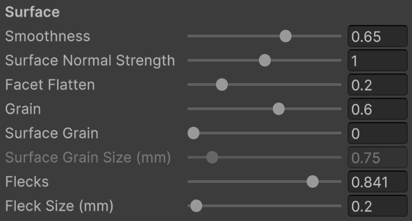
These settings shape how the body reflects the table's lights and probes. With a clear cover on the insert, the cover carries the glossy top, so the body's own reflections are faint; look for the highlight on the unlit insert.
Smoothness
Smoothness is how sharp those reflections are, from 0 to 1. A high value is glossy; a low value spreads the highlights out until they disappear. The highlight only sharpens near the top of the range, and a faceted body throws it off its ribs, so these pictures are without the cover and at Facet Flatten 0.95, where the flat top mirrors a light on the unlit insert.
| 0.65 (Clear Plastic) | 0.9 | 1 |
|---|---|---|
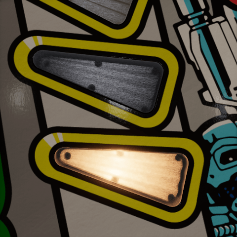 |
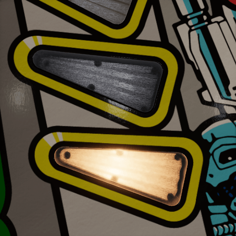 |
Surface Normal Strength
Surface Normal Strength is how much of the baked surface normal map shapes the reflections, from 0 to 2: rounded edges, bevels, and baked grain. On a clear starburst it is what makes the ribs catch the lights; on a colored one keep it low, its facets are in the mesh already. Needs a surface normal map and Facet Flatten below one. Shown from the angle of the Room Return pictures, onto the unlit insert, where the ribs catch the light.
| 0 | 1 (Clear Plastic) | 2 |
|---|---|---|
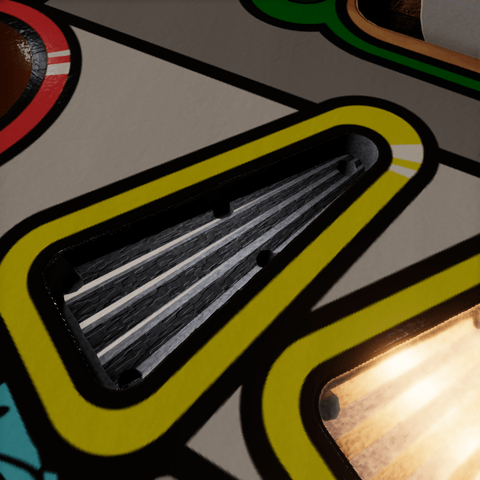 |
Facet Flatten
Facet Flatten turns the normal the lights and probes see toward the insert's flat top, from 0 to 1. Zero keeps the facets; one makes the body a flat sheet to the lights. Real clear plastic shows its ribs under a key light, so the Clear look keeps most of them; raise it if an insert flickers between bright and dark ribs as the view moves. The lamp's optics are not affected, and at one the baked surface relief is flattened too.
| 0 | 0.2 (Clear Plastic) | 0.95 |
|---|---|---|
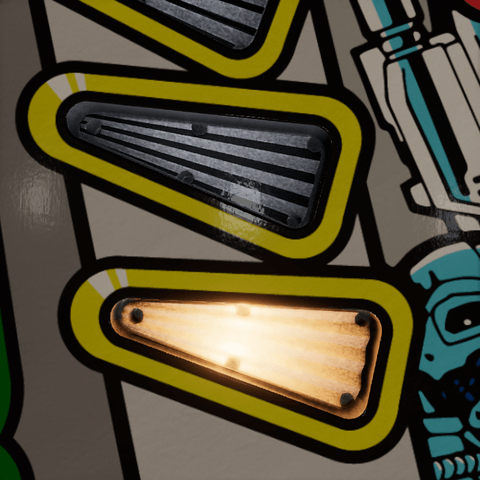 |
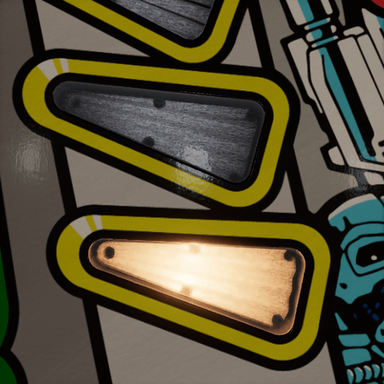 |
Surface Grain
Surface Grain is the fine texture of the molded plastic in its reflections, from 0 to 1, drawn in insert space instead of baked into the normal map, so it stays sharp at any zoom. Keep the bake's Grain Strength at zero with it. It fades out where its cells fall below a pixel. Variation Seed picks another pattern.
| 0 (Clear Plastic) | 0.5 | 1 |
|---|---|---|
Surface Grain Size (mm) is the size of the grain's cells, from 0.1 to 5 mm. The bake's grain measured 1.5 VPX units, about 0.75 mm. Shown with Surface Grain at 1.
| 0.1 mm | 0.75 mm (Clear Plastic) | 5 mm |
|---|---|---|
Grain
Grain is fine noise over the plastic's color and emission, lit and unlit, fixed in insert space, from 0 to 1. Zero is a smooth finish. It does not add roughness to the reflections. Variation Seed picks another pattern.
| 0 | 0.6 (Clear Plastic) | 1 |
|---|---|---|
For a starburst, begin with a modest Surface Normal Strength because the mesh already has tilted facets. Stipples and engraving have a plain displayed floor and rely on their surface map for reflection relief. Setting Facet Flatten to one also suppresses that mapped relief in the reflection normal.
Note
We bake two normal maps. Surface Normal is tangent-space data used by lights and probes. Optical Normals store sharp directions in insert-local space for the virtual bulb. Surface Normal Strength and Facet Flatten do not change optical direction. Baked grain affects the first map only.
Flecks
Flecks are dashes along the ribs, from 0 to 1, lit and unlit: the nicks and flash a molded insert's ridges carry. Each is a small tilted face, so a fleck lights up when a light or the room reflects off it and goes quiet when none does; a little of it brightens the plastic flat, so the dashes stay there in any light. Zero is a clean molding. Variation Seed picks another pattern. They are fine, so these pictures are taken close, from the angle of the Room Return pictures, where the ridges catch the light. Clear Plastic uses 0.841.
| 0 | 0.5 | 1 |
|---|---|---|
Fleck Size (mm) is how large the flecks are across a rib, from 0.1 to 5 mm; along it they run four times as long. They fade out where they fall below a pixel, so at the table-wide view only the larger sizes remain visible. Shown with Flecks at 1.
| 0.1 mm | 0.2 mm (Clear Plastic) | 1 mm |
|---|---|---|
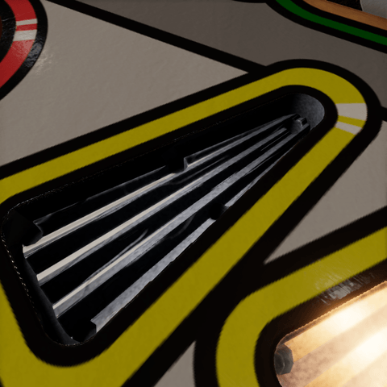 |
Lamp output
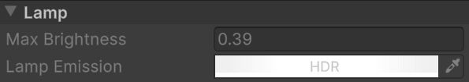
Max Brightness is shared by the material; each lamp's Intensity on the Insert Light component is a per-insert drive from 0 to 1. Raising the material's brightness therefore changes the maximum output of every insert using it.
Max Brightness
Max Brightness multiplies the emission and the Insert Light component's spill at full intensity. Zero turns both off. It is a number field on purpose: what is reasonable depends on Lamp Emission and the scene's exposure. The Clear color pairs a radiance of 1367 with 0.39; a color with a radiance of 85 needs around 8 for the same body, and the spill, which follows Max Brightness alone, comes out twenty times stronger.
| 0.1 | 0.39 (Clear) | 1.5 |
|---|---|---|
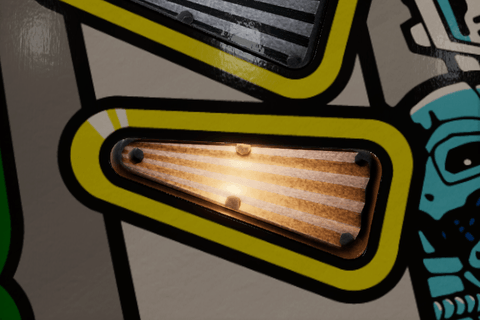 |
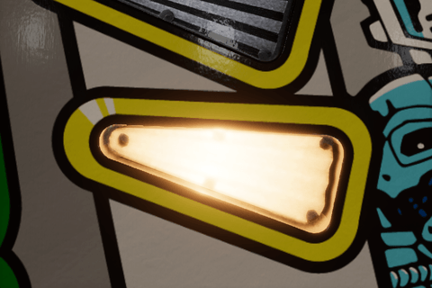 |
Lamp Emission
Lamp Emission is the nominal radiance of the lit insert, an HDR color that multiplies every lamp's Color. Keep it neutral: a neutral emission lets the Insert Light component and RGB lamps supply the hue, and a colored one filters it. Its hue also colors the spill.
| A quarter | Neutral (Clear) | Warm |
|---|---|---|
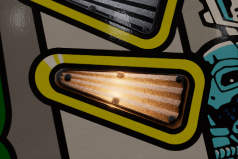 |
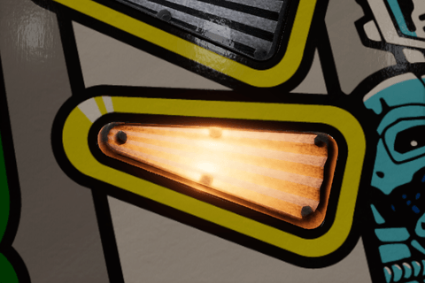 |
Tip
Keep the camera exposure fixed while tuning or comparing brightness. Auto-exposure can hide an increase by darkening the rest of the table. These emission values are artistic radiance controls, rather than a calibrated conversion from physical bulb wattage.
Virtual lamp
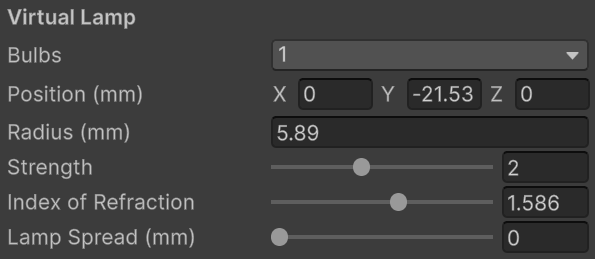
The virtual lamp is an image of the bulb seen through the plastic's facets.
- Bulbs is the active bulb count, the same setting as Number of lamps on the Insert Light component.
- Position (mm) is the first lamp's insert-local position; additional bulbs get a row each. See Position on the Lighting page for what it does.
Using the hybrid material starts the first lamp from the bake's suggestion: its radius is 40% of the insert's local X extent, with a minimum of 1 mm, and its center is below the lowest point by the larger of 1.5 times that radius or 5 mm. Tune both afterward.
Radius
Radius (mm) is the size of the soft bulb image, shared by all active bulbs. A larger radius broadens the moving hotspot and also widens the cavity that Cavity Spread measures.
| 2 mm | 5.89 mm (this material) | 12 mm |
|---|---|---|
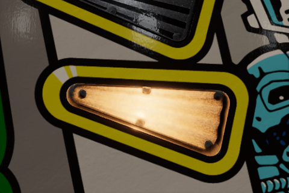 |
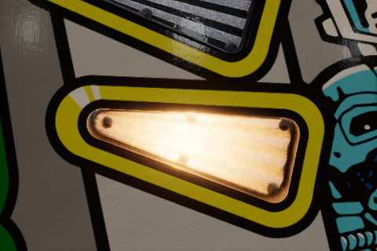 |
Strength
Strength is how much of the lit look is the lamp seen through the facets, against the baked glow, from 0 to 5. Zero leaves only the glow.
| 0 | 2 (Clear Plastic) | 5 |
|---|---|---|
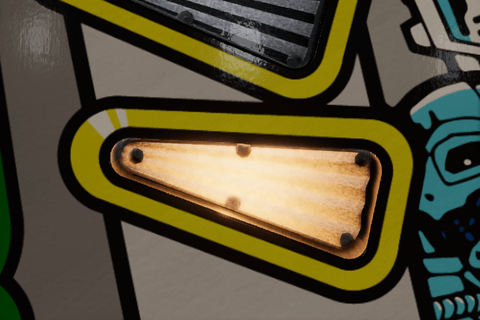 |
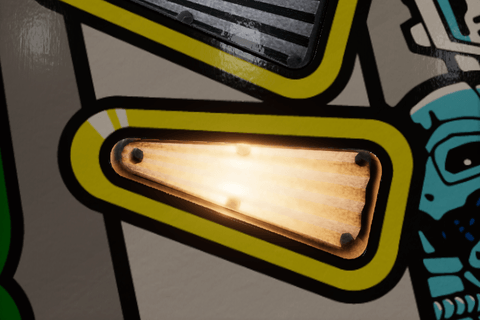 |
Index of Refraction
Index of Refraction is how strongly the facets bend the view toward the lamp, from 1.01 to 2. Acrylic is about 1.49. A clear insert's cavity view bends the same way. The bend shows when the insert is seen at an angle, so these pictures look at the lit insert from the side.
| 1.01 | 1.586 (Clear Plastic) | 2 |
|---|---|---|
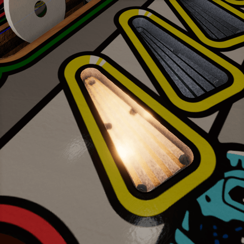 |
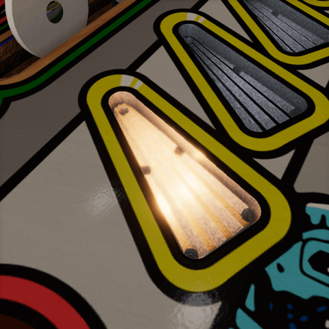 |
Lamp Spread
Lamp Spread (mm) is how far from each bulb the lit look reaches before it has fallen to half, from 0 to 100 mm. At twice that distance it is a fifth, at three times a tenth: a real insert is brightest around its bulb, and a banana's bulbs meet in a soft blend. Zero lights the whole body alike, which an LED insert does, and which floods the body as Max Brightness goes up. The Insert Light component's Tint With Lamp reaches as far. Clear Plastic uses zero; the pictures start at 1 mm, as zero would look like the widest spread.
| 1 mm | 12 mm | 100 mm |
|---|---|---|
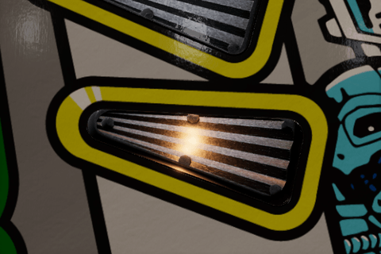 |
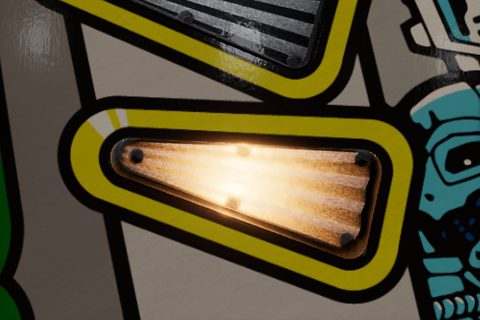 |
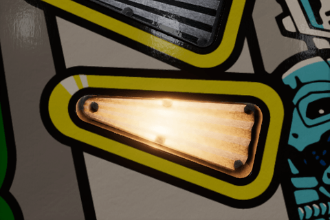 |
Note
Refraction and parallax. The shader refracts the view ray through a flat entrance and the patterned surface, then evaluates a virtual bulb below the insert. Its image shifts with the viewpoint and is evaluated independently for each eye. No screen texture is needed. The source geometry and neutral optical maps stay fixed while position, radius, and refraction are tuned live.
Glow
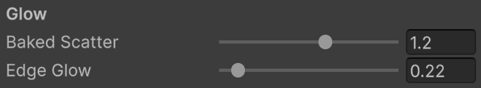
The glow is light the bake found inside the plastic. It supplements the virtual bulb's image and stays when its Strength is zero. Both need Max Brightness above zero and a lit lamp.
Baked Scatter
Baked Scatter is broad light scattered through the plastic, from the bake's cavity response, from 0 to 2. Too much washes out the starburst.
| 0 | 1.2 (Clear Plastic) | 2 |
|---|---|---|
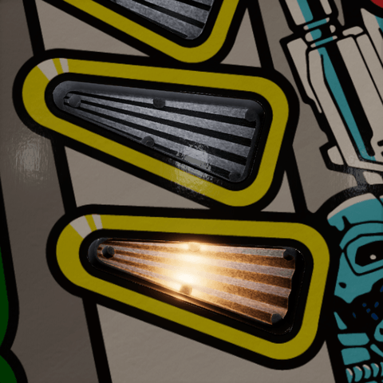 |
 |
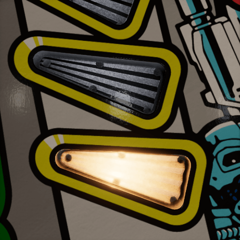 |
Edge Glow
Edge Glow is light caught by rounded edges, rims, and hole walls, from the bake's edge response, from 0 to 3. Keep it low, or every edge turns into a neon outline.
| 0 | 0.22 (Clear Plastic) | 3 |
|---|---|---|
 |
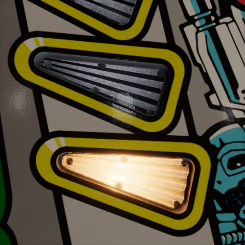 |
Facets
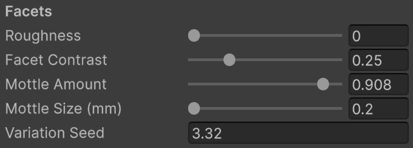
These settings use the baked starburst sectors to align variation with the fan. They are disabled when there is no starburst, and need a visible lamp or scatter.
Roughness
Roughness is how rough the structure inside the plastic is: the facets, channels, and holes the light comes up through, from 0 to 1. Zero couples the lamp into crisp ribs and rays; one diffuses it, so the ribs soften and the rays and the bulb's image go into the glow. The finish of the top is the cover's. Shown at Baked Scatter 0.4, where the rays aren't lost in the glow.
| 0 (Clear Plastic) | 0.5 | 1 |
|---|---|---|
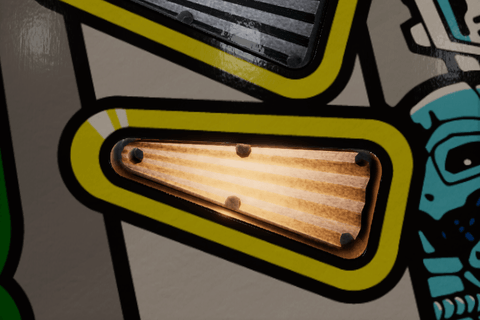 |
Facet Contrast
Facet Contrast is how differently the two slopes of each rib take the lamp's light, from 0 to 1. One gives crisp alternating ribs; about a quarter suits clear plastic. Shown at Baked Scatter 0.4, where the ribs aren't lost in the glow.
| 0 | 0.25 (Clear Plastic) | 1 |
|---|---|---|
Mottle
Mottle Amount is cloudy variation in the plastic, from 0 to 1: under room light, blotches of it lighter and darker than the rest, up to two fifths either way at 1, and small differences from rib to rib. Look at the unlit insert; a lit one hides it. Shown at Mottle Size 1 mm, where the blotches are larger than the ribs' own grain.
| 0 | 0.45 | 0.908 (Clear Plastic) |
|---|---|---|
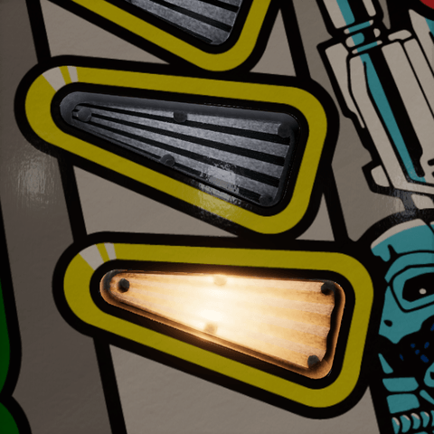 |
Mottle Size (mm) is the spacing of the mottle's cells, from 0.2 to 5 mm. Smaller is finer; it fades out once the cells are smaller than a pixel. Enabled when Mottle Amount is above zero.
| 0.2 mm (Clear Plastic) | 1 mm | 5 mm |
|---|---|---|
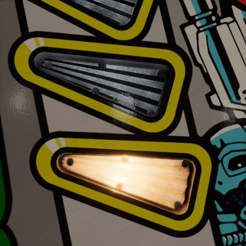 |
Variation Seed
Variation Seed picks another pattern for the mottle, the rib-to-rib differences, and the grain. It is not a brightness setting, and stays useful without a starburst when Grain is above zero. Shown at Mottle Size 1 mm, where the mottle's pattern is easy to follow.
| 3.32 (Clear Plastic) | 7 | 23 |
|---|---|---|
Baked Data
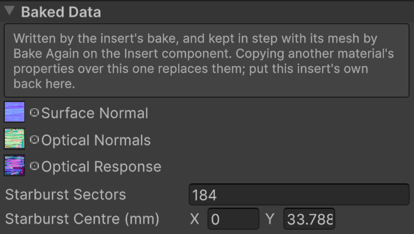
Bake Again owns these values and keeps them aligned with the body mesh. They are exposed to recover an insert's own maps after accidental material copying, or for a deliberately authored custom material. Copying another insert's maps can break the alignment even if the outlines look similar.
- Surface Normal is the tangent-space normal texture used for surface reflections.
- Optical Normals is the texture of sharp directions in insert-local space.
- Optical Response holds the cavity, edge, and transmission data described on Baking.
- Starburst Sectors is the sector count, normally twice the generator's Bursts. Below four the starburst-specific variation is inactive.
- Starburst Centre (mm) is the fan's X/Z center in insert-local millimeters. It must match the generated starburst center.
Do not retile these maps independently. The body's final UVs, tangents, and all three maps belong to one bake. Generated lamp suggestions also start from that insert's dimensions; they are then free to be tuned as material settings.
Note
Shader properties. The controls use _BaseColor (Tint), _InsertClarity, _InsertCavityColor, _InsertCavitySpread, _InsertCavityContrast, _InsertMinBrightness, _Smoothness, _NormalStrength, _InsertFacetFlatten, _OpticalGrain, _SurfaceGrain, _SurfaceGrainSize, _InsertLuminosity, _EmissiveColor, _OpticalLampGain, _OpticalIor, _OpticalSpread, _OpticalScatter, _OpticalEdgeGlow, _OpticalContrast, _OpticalVariation, _OpticalMottleSize, _OpticalSeed, _InsertRoughness, _OpticalFlecks, _OpticalFleckSize, _InsertRoomReturn, _InsertRoomBlur and _InsertRoomReturnEV. The names matter when editing look preset entries; the inspector shows the labels.
Note
Generated and runtime properties. _NormalMap, _OpticalNormalMap, and _OpticalResponseMap hold the textures. _OpticalLamp, _OpticalLampB, _OpticalLampC, and _OpticalLampD store local XYZ and radius W in meters; an additional bulb with radius zero is inactive. _OpticalStarburst stores center X/Z in X/Y, sector count in Z, and lowest fan height in W, with positions in meters. The Insert Light component supplies _InsertLampLevel and linear _InsertLampColor for the first lamp, _InsertLampColorB/C/D as linear RGB plus intensity in W for the other lamps, and _InsertLampTint for the tint blend. Edit those runtime values through the Insert Light component rather than through the material asset.
HDRP surface options
The material retains HDRP's standard Surface Options and Advanced Options. The supplied body uses an opaque surface, while the separate cover uses transparency. The custom Smoothness and surface normal controls shape the body's standard HDRP lighting and reflections; lamp emission is added alongside them. General table lighting, reflection probes, exposure, and post-processing still affect the final appearance.